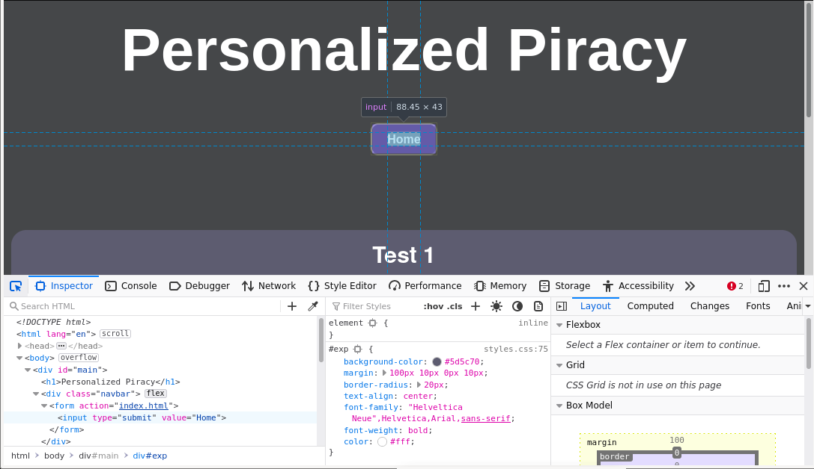

Personalized Piracy
Test 1
Creating a fake website for use in phishing can be quite an easy task. This test will showcase how easy an exact copy can be created.
How it's Made
Most of us may know that you can inspect any webpage you come across. Such as with the image below:

Although to the average person it may seem like a mess of words, the text on the bottom half
of said image is HTML website code. This code is basically what the website is 'made of'.
Likewise, since all this code is clearly present and doesn't need to be decompiled, one can
simply copy it and paste it into a new website, essentially creating an exact clone.
This test will showcase an exact clone of a popular school utility website called
JupiterEd. Click the button below to start the test. Once in the test, you may return by
the button on the top.